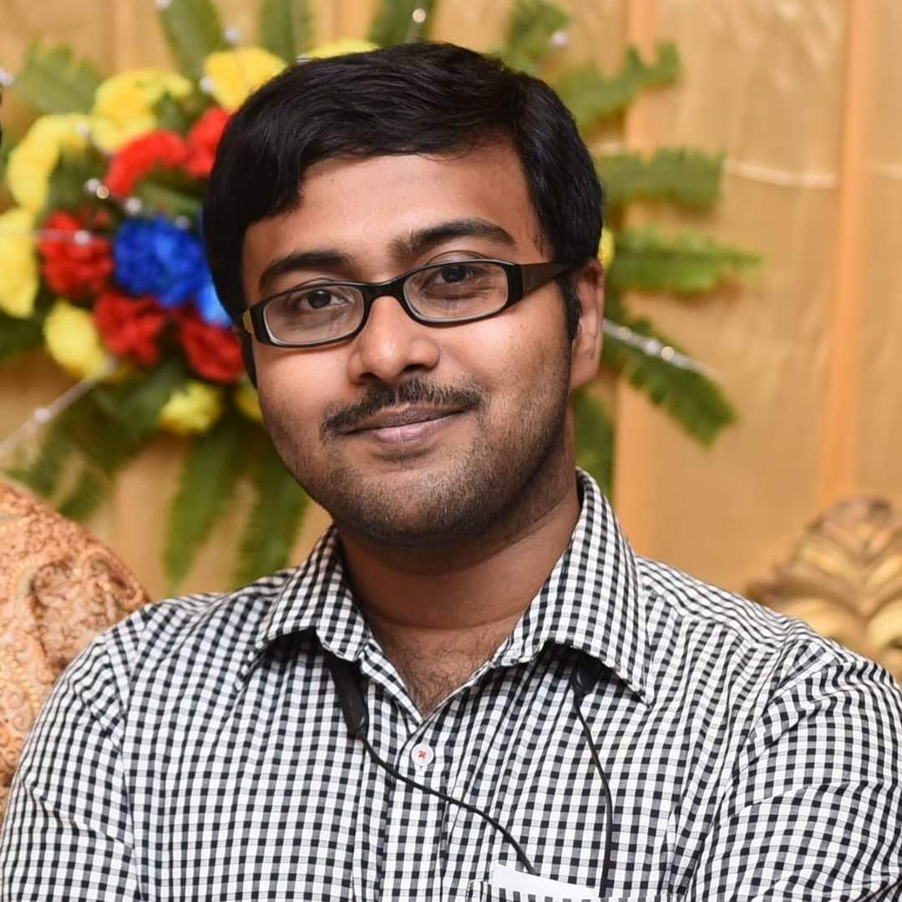
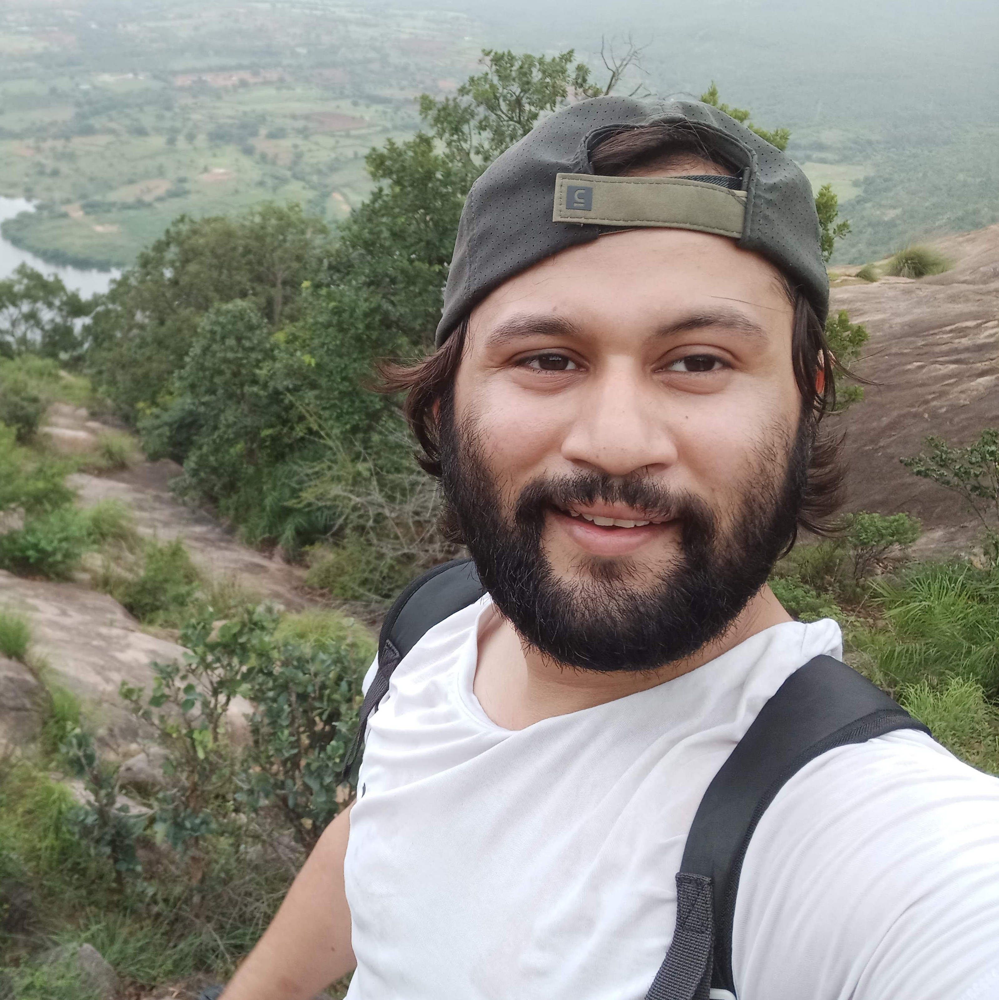

| Home | Registration | Program | Speakers | Flyer |
Indian Statistical Institute (ISI) and IBM Quantum is organizing the first ever Qiskit Fall Fest Kolkata chapter. Computing, as we know, is changing with the emergence of quantum computers, and it is the goal of this official event from IBM Quantum to educate the young minds, in and around Kolkata, this domain. The event will constitute virtual lectures and tutorials in Qiskit from October 17 - 21, from 6-8pm. The workshop and the coding tutorials will be delivered by researchers and faculties from IBM Quantum and Indian Statistical Institute.
Here are the Organizers. From the left, Ritajit Majumder(majumdar.ritajit@gmail.com) Senior Research Fellow at Indian Statistical Institue, Kolkata & Qiskit Advocate. Second from the left is Debasmita Bhoumik(debasmita.ria21@gmail.com) Senior Research Fellow at Indian Statistical Institute, Kolkata. Third from the left is Soujanya Ray, Silicon Engineer at Intel Technologies Pvt. Ltd.
|  |  |